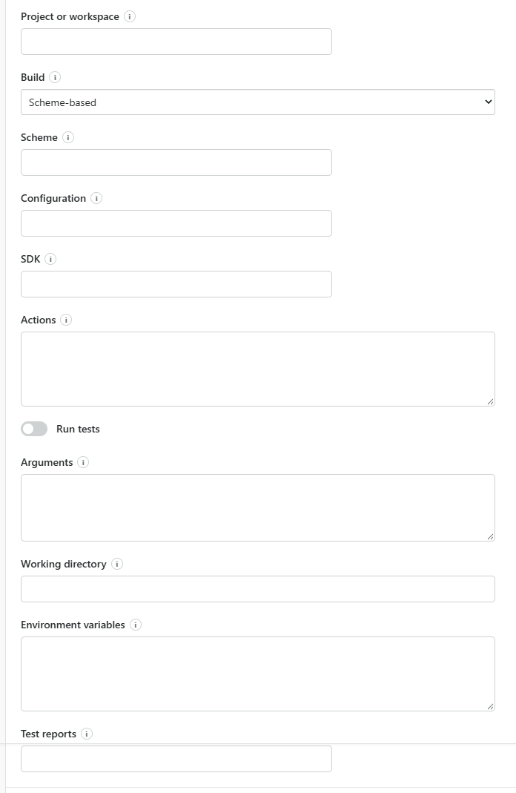

Xcode Project
Runs xcodebuild on a project or workspace with a scheme or target, configuration, SDK and actions. It needs a macOS agent with Xcode.
When to use it
Use it to build and test the iOS or macOS build of your game, for example the Xcode project Unity generates.
How to set it up
- Open the build configuration and click Settings › Build Steps.
- Click Add build step. Type
Xcode Projectin Filter step types if you like, then click the Xcode Project tile (group Build tools). - Type a Step name, for example
Build iOS. - Fill in the fields described below.
- Optional: set Execute step, Conditions and Retry on failure. See The steps list and the step editor.
- Click Save.

Every field
| Field | What it does | Default | Example |
|---|---|---|---|
| Project or workspace | An .xcodeproj or .xcworkspace, relative to the working directory. A workspace is passed as -workspace, a project as -project. Empty lets xcodebuild find the project there. | Empty | Builds/iOS/Unity-iPhone.xcodeproj |
| Build | Scheme-based passes -scheme, Target-based passes -target. Only the fields of the chosen kind show. | Scheme-based | Scheme-based |
| Scheme | Passed as -scheme. Use a scheme or a target, not both. | Empty | Unity-iPhone |
| Target | Passed as -target. | Empty | Game |
| Configuration | Passed as -configuration. | Empty | Release |
| SDK | Passed as -sdk. | Empty | iphoneos |
| Actions | One action per line, such as clean, build or test. Empty runs build. | Empty | clean then build |
| Run tests | Adds the test action after the actions above, unless they already have it. Use a scheme-based build. | Off | On |
| Arguments | One argument per line, placed before the actions, such as -destination or a build setting. | Empty | CODE_SIGN_STYLE=Manual |
| Working directory, Environment variables, Test reports | The same in every runner. See Fields every runner has. This runner has no container settings. |
A worked example
Build the iOS project generated by Unity. Step name Build iOS, Project or workspace Builds/iOS/Unity-iPhone.xcodeproj, Scheme Unity-iPhone, Configuration Release, Actions clean and build.
What you see when it runs
The console shows the xcodebuild command and its output. Xcode writes test results as a result bundle, not JUnit XML: if another tool converts them, name its files in Test reports.
Problems and fixes
| Problem | What to do |
|---|---|
| The xcodebuild command was not found on this agent | This step needs a macOS agent with Xcode installed. |
| The Xcode Project step has both a scheme and a target | Use one of them. |